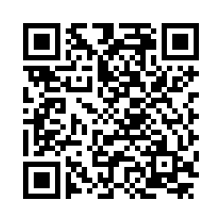

What is Academic Confidence?
Academic behavioural confidence (ABC) is the extent to which you feel that you have a strong belief, firm trust, or sure expectation of how you will respond to the demands of studying at university. As such, ABC is distinct from the academic performance aspirations that you may have, such as career goals, although the two may be related.
If you scan the QR code you can complete the Academic Behavioural Confidence Scale. This scale gives you a sense of how confident you feel about succeeding at university. As you can see from the results provided in your email, there are four elements that the authors believe make up ABC, and an overall mean score:
- Grades - the confidence you have that you will be able to produce appropriate work
- Verbalising - your confidence in your ability to ask questions and discuss ideas
- Studying - your confidence in skills that will aid learning, such as time management, organisation, library skills, and motivation
- Attendance - your confidence that you be able to attend classes and be punctual
Interpreting Your Score
In a previous study by Sander and Sanders (2009) they asked 507 Psychology students to complete the ABC scale. The minimum score is 1, and the maximum score is 5. If you score 1 or 2 on any of the components of the ABC, this would indicate a lack of confidence in your ability for that part of ABC. Whereas a score above 3.5 suggests that you are confident in your ability on that dimension. We anticipate that most students will have a score that is reasonably similar to the averages shown in the table below.
Table 1. Average scores of students in three disciplines on the Academic Behavioural Confidence Scale from Sander & Sanders (2009)| Psychology (n=507) | Nutrition (n=37) | Health & Social Care (n=34) | |
|---|---|---|---|
| Overall ABC Score | 3.81 | 3.71 | 3.45 |
| Confidence in Grades | 3.66 | 3.82 | 3.56 |
| Confidence in Verbalising | 3.17 | 3.05 | 3.17 |
| Confidence in Studying | 3.76 | 3.77 | 3.52 |
| Confidence in Attendance | 4.47 | 4.29 | 4.47 |
Developing Academic Confidence
Firstly, you have been offered a place to study Psychology at Liverpool Hope University. This suggests that the University believes that you have the aptitudes to be able to study at a higher level than you have previously.
Second, there is a whole support network built into the university systems, courses and services and these are available to all.
Third, there is nothing to prevent you from developing your academic confidence. It is not a fixed skill or aptitude, but rather a state of mind and attitude.
You may already score highly on some of these confidence measures or you could feel a little overwhelmed right now, but like any aptitude, you can always improve how you feel about your confidence in your academic studies.
Below are some ideas about how you can work to develop and refine your confidence. While the activities might not directly relate to academic studies, they are constructed to allow you to reflect on your own experiences, observations of others, the impact of positive emotions, and how to deal with feedback.
Developing confidence from your own experiences
Think of something you do really well. It could be beyond what you have done at school or in further education e.g. your life at home or at work. You might see this as a very small skill. Something as simple as...
- Are you good at keeping in touch with friends?
- Are you organised?
- Do you know how to dress in a stylish way?
- Are you good at sports?
Things to consider
- Did this skill happen instantly?
- Did you have to work at it and build your self-belief that you could do it well?
- How do you think that you can apply this to your life at University?
Developing confidence from observations
Observing a friend or family member succeed at a task can strengthen beliefs in your own abilities. Think about or write down an experience when you've seen someone else learn to do something well. It need not be related to your studies.
- Is there someone in your family or friendship group who has become very skilful at something?
- Can they play a musical instrument?
- Are they a good cook? Have you seen one of your friends play well at sport?
Things to consider
- What did you learn from watching someone else do something well?
- Did they succeed every time?
- What did they learn from bad experiences?
- Did it change their desire to continue the skill?
Developing confidence from verbal feedback
Think back to a time when you've received encouragement, again this does not need to relate to academic studies, it can be something personal or generally encouraging. Picture the person in your mind
- What did they say to boost your confidence?
- What is it that makes you trust the opinion of that person? (qualifications? experience?)
Things to consider
- Did your confidence change because someone encouraged you? What could you learn from them that you tell yourself when things are not going as well as expected?
- How do you think that you can apply this to your studies?
Developing confidence from an emotional state
Having a positive mood and disposition can boost your self-belief, while anxiety and stress can undermine it. Think back to a time when you handled a stressful situation well or you were enjoying yourself.
- Perhaps you did well in a test or an exam?
- Did you help someone who was going through a difficult time?
- What kind of event made you feel happy and at ease?
Things to consider
- Did your confidence change, even temporarily, when you felt satisfied that you did something well?
- What qualities do you recognise in yourself when helping or supporting someone else?
- Do you think you can learn how to be more positive about your own confidence?
Remember:
Nobody knows everything and learning is a lifelong journey. Along the way, you will succeed at many things and you may occasionally fail or fall short in some areas, your reflections on success and failure will help to determine your path in the journey you are about to take.
Reference:
Sander, P., & Sanders, L. (2009). Measuring academic behavioural confidence: the ABC scale revisited. Studies in Higher Education, 34(1), 19-35.